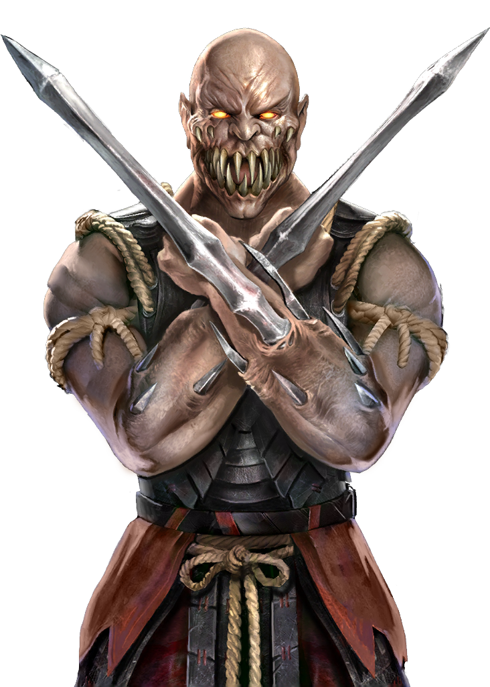

 Baraka is one of the most known Mortal Kombat characters in the Mortal Kombat series, along with: Scorpion, Sub-Zero and Johnny Cage. Baraka was introduced in Mortal Kombat 2 and grabbed peoples attention with his big blades that stick out of his arms. Baraka appeared in Mortal Kombat 9, but not in Mortal Kombat X (10). So a lot of people were excited when Baraka was confirmed to be a playable character. But from a lot of people, I am one of the few that ectually learned how to play Baraka. If you want to learn how to play Baraka, you're at the right place. I'll be teaching you the basics and kombo's of Baraka.

MK11 language
I am gonna use MK11 language, so here is a sipmle explanation, so you don't get lost.
- 1 = square (X)
- 2 = triangle (Y)
- 3 = X (A)
- 4 = crircle (B)
- f = forward
- b = back
- d = down
- u = up
- grab = L1 (LB)
- punish = interupting someone's kombo
- 1-1-2.This kombo is safe, meaning that if the opponent blocks it, they can't punish me.
- 1-2-2.This kombo is high risk, high reward. it contains an overhead attack wich can only be blocked while standing, so if the opponent ducks while blocking, then this attack will hit them. If your opponent blocks it, they can punish you with a full kombo. But if you land the last hit and it's a punish, then it will be a Krushing blow. This krushing blow does high damage and launches the enemy in the air, allowing a full kombo, wich can do about 48% damage.
- f4-4This kombo is used to cover a great distance. Once again, high risk, high reward. The attack is slow and can easily be blocked. But if it lands and punishes, then it is a krushing blow. This krushing blow is not as powerful at all, in fact it only does 16% damage as supposed to the 20% average krushing blow damage. This krushing blow also has plus frames, meaning that you can’t further use another kombo.
- b3-1-2This kombo is used for what we call a mix up. The first attack is low, so your opponent has to bock low. The second is a mid and the third one is an overhead, meaning that your opponent has to block high. you "mix" your opponent up by performing random lows and overheads, so they have to geuss if they need to block low or high.
- f2-1-2many players forget about this kombo, cause it's not that good. But every now and then, it can come in handy, because it covers great distance. Plus the combo is a mid and not punishable, wich is rare.
- 2-1+3The plus in the Kombo means that you have to press 1 and 3 at the same time. in this kombo, it activates a powerful stab, that knock the opponent back. It's unsafe, but if you hit it, you'll get your opponent in the corner.